jana
 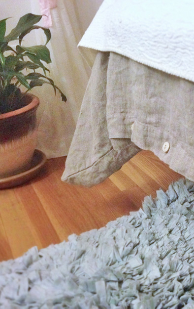
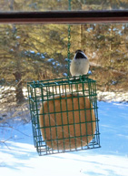
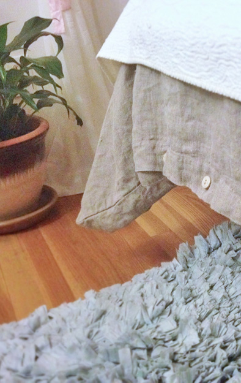
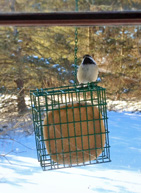
I was raised in North Carolina and now attend graduate school in New England. While I love the area, moving apartments and living with new housemates each year makes it difficult to feel a personal connection with where I live. However, my Rough Linen helps me feel connected to the past, to nature, and to this community of linen enthusiasts. It gives me roots into something greater than myself. Thank you, Tricia, for helping to make my little room — the only space I can call my very own — the sanctuary I have dreamed of.
 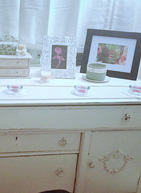
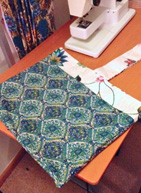
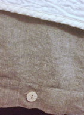
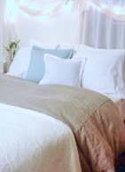
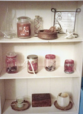
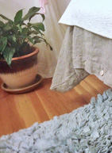
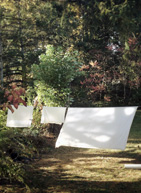
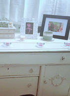
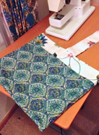
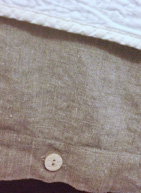
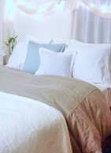
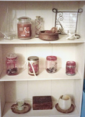
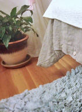
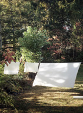